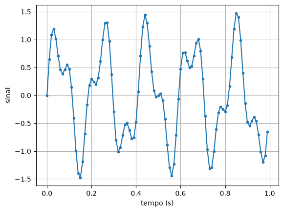
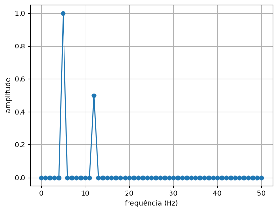
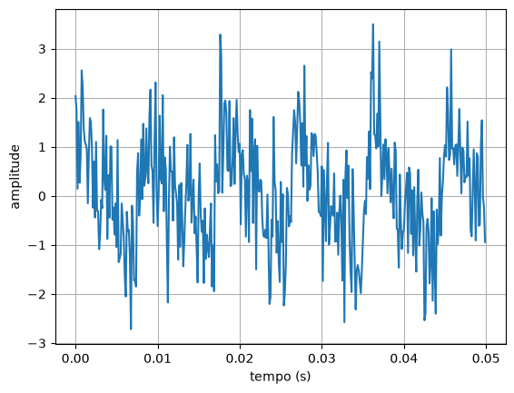
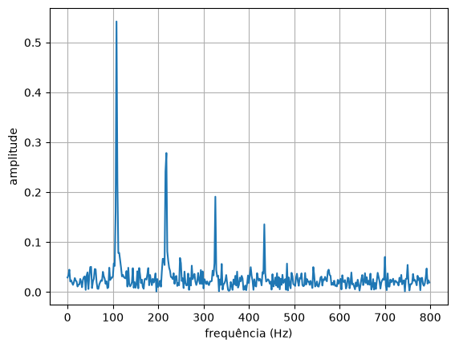
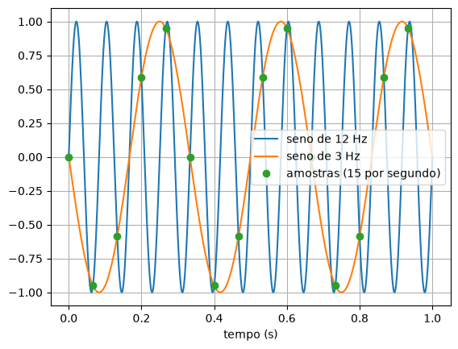
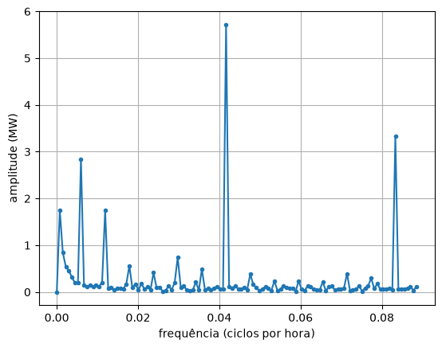

17. Frequências e a FFT¶
No capítulo 16, os ciclos do consumo de energia eram conhecidos de antemão: um dia tem 24 horas, e uma semana, 168. Mas e quando não se sabe o período? Um motor vibra, e a vibração é uma mistura da rotação, de folgas e de um rolamento gasto. Uma corda de violão soa com a nota principal e vários harmônicos. Um sinal de rádio carrega várias estações ao mesmo tempo.
A pergunta passa a ser "de quais frequências este sinal é feito?". A ferramenta que responde é a transformada de Fourier, e o algoritmo rápido que a calcula, a FFT (Fast Fourier Transform), é possivelmente o método numérico mais usado do mundo: ele está no seu celular, no Wi-Fi, no MP3, no JPEG e no 5G.
Frequências escondidas¶
Um sinal simples, feito de dois senos: um de 5 Hz (5 voltas por segundo) com amplitude 1 e um de 12 Hz com amplitude 0,5. O computador guarda o sinal em amostras: 100 por segundo. Essa é a taxa de amostragem, \(f_s = 100\) Hz.
# Um sinal feito de dois senos: 5 Hz com amplitude 1 e 12 Hz com amplitude 0,5,
# amostrado 100 vezes por segundo durante 1 s. No grafico do tempo, da para ver
# que ha "coisa misturada", mas nao quais frequencias.
import numpy as np
import matplotlib.pyplot as plt
fs = 100 # amostras por segundo
N = 100 # 1 s de sinal
t = np.linspace(0, (N - 1) / fs, N) # 0, 0.01, 0.02, ..., 0.99
sinal = np.sin(2 * np.pi * 5 * t) + 0.5 * np.sin(2 * np.pi * 12 * t)
plt.figure()
plt.plot(t, sinal, ".-")
plt.xlabel("tempo (s)")
plt.ylabel("sinal")
plt.grid()
plt.show()
print(f"{N} amostras, de {t[0]} s a {t[-1]:.2f} s")

Olhando o gráfico, dá para desconfiar de 5 ondas grandes, mas a de 12 Hz fica escondida nelas. Com ruído e com 5 ou 10 componentes, olhar o gráfico no tempo não adianta. É preciso um jeito de medir quanto de cada frequência existe no sinal.
No quadro: a transformada de Fourier¶
🧑🏫 No quadro — a transformada discreta de Fourier
1. Para saber se o sinal tem a frequência \(k\), multiplique-o, amostra por amostra, por um cosseno de frequência \(k\) e some: \(\sum_n x_n \cos(2\pi k n / N)\).
2. Se o sinal tem essa frequência, ele sobe quando o cosseno sobe e desce quando o cosseno desce: os produtos são quase todos positivos, e a soma é grande. Se não tem, os produtos ficam ora positivos, ora negativos, e a soma dá quase zero. É uma "sonda" para cada frequência.
3. Um problema: se a componente do sinal estiver atrasada um quarto de volta, ela é um seno, e a sonda de cosseno dá zero. A solução é usar duas sondas, um cosseno e um seno, e combinar as duas somas como os lados de um triângulo retângulo:
4. O fator \(2/N\) faz \(A_k\) ser a amplitude do seno de frequência \(k\): um seno de amplitude 1 dá \(A_k = 1\).
5. Com \(N\) amostras em \(T\) segundos, as frequências testadas são \(0, \frac{1}{T}, \frac{2}{T}, \ldots\) até \(\frac{f_s}{2}\). O espaço entre elas, \(1/T\), é a resolução: para distinguir frequências mais próximas, é preciso gravar por mais tempo.
Em código, são dois laços: um para cada frequência \(k\), outro para cada amostra \(n\).
# A transformada discreta de Fourier com lacos: para cada frequencia k (em Hz,
# porque o sinal tem 1 s), multiplica o sinal por um cosseno e por um seno dessa
# frequencia e soma. Se o sinal "contem" a frequencia k, a soma e grande.
import numpy as np
fs = 100
N = 100
t = np.linspace(0, (N - 1) / fs, N)
sinal = np.sin(2 * np.pi * 5 * t) + 0.5 * np.sin(2 * np.pi * 12 * t)
amplitude = np.zeros(N // 2 + 1)
for k in range(N // 2 + 1):
soma_cos = 0.0
soma_sen = 0.0
for n in range(N):
soma_cos = soma_cos + sinal[n] * np.cos(2 * np.pi * k * n / N)
soma_sen = soma_sen + sinal[n] * np.sin(2 * np.pi * k * n / N)
amplitude[k] = 2 * np.sqrt(soma_cos ** 2 + soma_sen ** 2) / N
for k in range(N // 2 + 1):
if amplitude[k] > 0.1:
print(f"frequencia {k:2d} Hz: amplitude {amplitude[k]:.3f}")
print(f"maior amplitude acima de 12 Hz: {np.max(amplitude[13:]):.1e}")
frequencia 5 Hz: amplitude 1.000
frequencia 12 Hz: amplitude 0.500
maior amplitude acima de 12 Hz: 3.1e-15
As sondas acharam exatamente os dois senos, com as amplitudes certas, e zero (até o arredondamento, \(10^{-15}\)) em todas as outras frequências.
A FFT¶
Os dois laços fazem \(N \times N/2\) multiplicações. Com 1 segundo de áudio de CD (\(N = 44\,100\)), são quase um bilhão. Em 1965, Cooley e Tukey publicaram um jeito de reaproveitar as contas, dividindo o sinal ao meio repetidas vezes, que faz o mesmo com cerca de \(N \log_2 N\) operações: uns 700 mil. Essa é a FFT. Ela dá o mesmo resultado da transformada com laços, só que milhares de vezes mais depressa.
🧰 Comando novo: np.fft.rfft
np.fft.rfft(sinal) calcula as somas \(C_k\) e \(S_k\) para todas as frequências, de
\(0\) até \(f_s/2\), com a FFT. Cada resultado é um número complexo, que guarda as
duas somas juntas. Não é preciso saber mais do que isso sobre números complexos
neste curso: o que interessa é o tamanho de cada um, que é o próximo
comando.
🧰 Comando novo: np.abs
np.abs(a) dá o valor absoluto de cada elemento: np.abs(np.array([-2, 3])) dá
[2 3]. Num resultado da FFT, dá o tamanho \(\sqrt{C_k^2 + S_k^2}\) de cada
número, e então a amplitude é 2 * np.abs(espectro) / N.
🧰 Comando novo: np.fft.rfftfreq
np.fft.rfftfreq(N, 1 / fs) dá a frequência, em Hz, de cada posição do resultado
da rfft: \(N\) é o número de amostras, e 1 / fs, o tempo entre elas. Com 4
amostras a 4 por segundo, np.fft.rfftfreq(4, 1 / 4) dá [0. 1. 2.].
# A mesma conta com a FFT do numpy: rfft faz as somas, rfftfreq diz a que
# frequencia corresponde cada posicao e abs tira o "tamanho" de cada resultado.
import numpy as np
import matplotlib.pyplot as plt
fs = 100
N = 100
t = np.linspace(0, (N - 1) / fs, N)
sinal = np.sin(2 * np.pi * 5 * t) + 0.5 * np.sin(2 * np.pi * 12 * t)
espectro = np.fft.rfft(sinal)
freq = np.fft.rfftfreq(N, 1 / fs)
amplitude = 2 * np.abs(espectro) / N
plt.figure()
plt.plot(freq, amplitude, "o-")
plt.xlabel("frequência (Hz)")
plt.ylabel("amplitude")
plt.grid()
plt.show()
print(f"{len(freq)} frequencias, de {freq[0]} a {freq[-1]} Hz, de {freq[1]} em {freq[1]} Hz")
print(f"amplitude em 5 Hz: {amplitude[5]:.3f}")
print(f"amplitude em 12 Hz: {amplitude[12]:.3f}")
51 frequencias, de 0.0 a 50.0 Hz, de 1.0 em 1.0 Hz
amplitude em 5 Hz: 1.000
amplitude em 12 Hz: 0.500

Esse gráfico, amplitude contra frequência, é o espectro do sinal. O mesmo sinal, visto do outro lado: no tempo, uma mistura; na frequência, dois picos limpos.
Um afinador¶
🌍 Contexto: afinar um violão
A quinta corda do violão, solta, deve soar na nota lá de 110 Hz. Os
afinadores de celular gravam um pedaço do som, calculam a FFT e mostram se o pico
mais forte está acima ou abaixo da nota certa. O arquivo nota_violao.csv tem
meio segundo dessa corda, gravado a 8000 amostras por segundo, com o barulho de
uma sala.
# Um afinador: a quinta corda do violao deveria soar em 110 Hz (a nota la).
# Meio segundo de gravacao, 8000 amostras por segundo, com muito ruido.
import numpy as np
import matplotlib.pyplot as plt
dados = np.loadtxt("nota_violao.csv", delimiter=",", skiprows=1)
t = dados[:, 0]
som = dados[:, 1]
fs = 8000
N = len(som)
amplitude = 2 * np.abs(np.fft.rfft(som)) / N
freq = np.fft.rfftfreq(N, 1 / fs)
plt.figure()
plt.plot(t[:400], som[:400])
plt.xlabel("tempo (s)")
plt.ylabel("amplitude")
plt.grid()
plt.show()
plt.figure()
plt.plot(freq[:400], amplitude[:400])
plt.xlabel("frequência (Hz)")
plt.ylabel("amplitude")
plt.grid()
plt.show()
k = np.argmax(amplitude)
print(f"resolucao: {freq[1]} Hz")
print(f"frequencia mais forte: {freq[k]} Hz")
if freq[k] < 110:
print("a corda esta baixa: aperte a tarraxa")
else:
print("a corda esta alta ou afinada")


No tempo, o ruído esconde tudo. No espectro, a nota aparece com clareza, e também os harmônicos: picos em 2, 3 e 4 vezes a frequência principal, que dão ao violão o som de violão (um piano tocando a mesma nota tem os mesmos picos, com outras alturas).
O afinador diz 108 Hz: a corda está baixa. Repare na resolução: com meio segundo de som, as frequências testadas vão de 2 em 2 Hz (106, 108, 110...), e o afinador não distingue 108 de 108,5. Para ver o meio hertz, seria preciso gravar pelo menos 2 segundos. Os afinadores de verdade refinam o pico com uma interpolação entre as frequências vizinhas (o capítulo 10 de novo).
Amostrar rápido o bastante¶
# Aliasing: um seno de 12 Hz amostrado so 15 vezes por segundo. As amostras
# caem exatamente sobre um seno de 3 Hz, e a FFT nao tem como saber a diferenca.
import numpy as np
import matplotlib.pyplot as plt
f = 12
fs = 15
N = 15 # 1 s
t = np.linspace(0, (N - 1) / fs, N)
amostras = np.sin(2 * np.pi * f * t)
t_fino = np.linspace(0, 1, 1000)
plt.figure()
plt.plot(t_fino, np.sin(2 * np.pi * f * t_fino), label="seno de 12 Hz")
plt.plot(t_fino, -np.sin(2 * np.pi * 3 * t_fino), label="seno de 3 Hz")
plt.plot(t, amostras, "o", label="amostras (15 por segundo)")
plt.xlabel("tempo (s)")
plt.grid()
plt.legend()
plt.show()
amplitude = 2 * np.abs(np.fft.rfft(amostras)) / N
freq = np.fft.rfftfreq(N, 1 / fs)
k = np.argmax(amplitude)
print(f"a FFT diz: {freq[k]} Hz")
print(f"frequencia mais alta que 15 amostras/s enxergam: {fs / 2} Hz")

💥 Quebre o método
Um seno de 12 Hz, amostrado 15 vezes por segundo, e a FFT diz, com toda a convicção, 3 Hz. Não é erro de conta: as 15 amostras caem exatamente sobre um seno de 3 Hz também, e nenhum método tem como saber qual dos dois foi gravado. É o aliasing (do inglês alias, "outro nome"): uma frequência alta se disfarça de frequência baixa.
A regra é o teorema da amostragem (de Nyquist e Shannon): só se enxergam frequências até a metade da taxa de amostragem, \(f_s/2\). Por isso o áudio de CD usa 44 100 amostras por segundo: o ouvido escuta até uns 20 kHz, e \(44\,100/2 = 22\,050\). É também por isso que as rodas de um carro, num vídeo, parecem girar devagar ou para trás.
Aumentar a taxa depois de gravar não resolve: a informação já se perdeu. Os conversores de verdade põem um filtro antes da amostragem, que corta tudo o que passa de \(f_s/2\).
Mesmo método, outra área¶
🌍 Contexto: os ciclos do consumo de energia, sem saber quais são
No capítulo 16, os ciclos do consumo de energia foram usados porque se sabia que um dia tem 24 horas. Com a FFT, a própria série diz quais são os seus ciclos. Com uma amostra por hora, as frequências saem em ciclos por hora, e o período é o inverso: \(1/f\).
# Mesmo metodo, outra area: os ciclos do consumo de energia (capitulo 16), sem
# saber de antemao quais sao. Uma amostra por hora: as frequencias saem em
# "ciclos por hora", e o periodo e 1 / frequencia.
import numpy as np
import matplotlib.pyplot as plt
dados = np.loadtxt("consumo_energia.csv", delimiter=",", skiprows=1)
consumo = dados[:, 1]
N = len(consumo)
variacao = consumo - np.mean(consumo) # sem a media, que so daria um pico em 0
amplitude = 2 * np.abs(np.fft.rfft(variacao)) / N
freq = np.fft.rfftfreq(N, 1) # uma amostra por hora
plt.figure()
plt.plot(freq[:120], amplitude[:120], ".-")
plt.xlabel("frequência (ciclos por hora)")
plt.ylabel("amplitude (MW)")
plt.grid()
plt.show()
print("os tres picos mais fortes:")
copia = amplitude.copy()
for i in range(3):
k = np.argmax(copia)
print(f" periodo {1 / freq[k]:6.1f} h amplitude {amplitude[k]:.2f} MW")
copia[k] = 0
os tres picos mais fortes:
periodo 24.0 h amplitude 5.72 MW
periodo 12.0 h amplitude 3.33 MW
periodo 168.0 h amplitude 2.84 MW

Os três picos mais fortes são o ciclo de 24 horas, o de 168 horas (a semana) e um de 12 horas. Este último não é um ciclo novo: o dia típico do consumo não é um seno perfeito (tem um vale de madrugada e um pico estreito à noite), e a forma dele precisa de um "harmônico" de 12 horas, como a corda do violão. Antes da FFT, a média foi tirada: ela é a frequência zero, e o pico dela esconderia os outros.
A mesma análise encontra o ciclo das manchas solares (11 anos), os ritmos do coração num eletrocardiograma e a sazonalidade de vendas numa loja.
Erros comuns deste capítulo¶
| Sintoma | Causa provável |
|---|---|
| um pico enorme na frequência 0 esconde o resto | o sinal tem média diferente de zero: subtraia np.mean(sinal) antes da FFT |
| as frequências no eixo x estão erradas | o segundo argumento de rfftfreq é o tempo entre amostras (1 / fs), e não fs |
| as amplitudes não batem com o sinal | faltou o 2 * ... / N |
| o pico está numa frequência que o sinal não pode ter | aliasing: a frequência real passa de \(f_s/2\) |
| não dá para separar duas frequências próximas | a resolução é \(1/T\): grave por mais tempo |
plt.plot reclama de números complexos |
faltou o np.abs |
Onde isso é usado de verdade¶
- Telecomunicações: o Wi-Fi, o 4G e o 5G (OFDM) enviam os dados em centenas de frequências ao mesmo tempo, montadas e separadas por uma FFT em cada símbolo.
- Áudio e música: afinadores, equalizadores, reconhecimento de músicas (Shazam) e a compressão do MP3, que descarta as frequências que o ouvido não percebe.
- Manutenção preditiva: sensores de vibração em motores, turbinas e bombas detectam defeitos pela frequência (é a aula 17).
- Imagens: o JPEG usa uma prima da transformada de Fourier, em blocos de 8×8 pixels; a ressonância magnética monta a imagem com uma FFT em duas dimensões.
- Ciências: os astrônomos acham planetas fora do sistema solar pelo ciclo do brilho da estrela; os sismólogos, a assinatura de um terremoto.
Resumo¶
- Um sinal pode ser visto no tempo ou na frequência; o espectro mostra quanto de cada frequência ele tem.
- A transformada discreta de Fourier mede cada frequência com uma "sonda": multiplica o sinal por um cosseno e por um seno dela e soma.
- A FFT calcula o mesmo, com \(N \log_2 N\) operações em vez de \(N^2\):
2 * np.abs(np.fft.rfft(sinal)) / Ndá as amplitudes, enp.fft.rfftfreq(N, 1 / fs), as frequências. - A resolução é \(1/T\): mais tempo de gravação separa frequências mais próximas.
- Só se enxergam frequências até \(f_s/2\); acima disso, o aliasing as disfarça de frequências baixas.
Para praticar¶
A Lista 17 tem uma transformada à mão (✏️), a amplitude e a frequência dominante de um sinal, a resolução e o limite de Nyquist, e os ciclos de uma série.